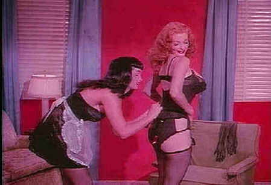

| Betty
Page Pin-Up Queen/F,F |
| Cult Epics/1950s/97m/Color&BW/1.33 |
Caveat emptor. That’s right, buyers
beware. There’s not much to Betty Page Pin-Up Queen. The package calls itself a "collector’s
edition," and it is simply a collection of early fifties erotic soft porn culled from very
poor 35mm color sources and some other atrocious 8mm black and white elements.
As I watched Page go through her endlessly ludicrous gyrations, I couldn’t
help but think of some B grade Hollywood musicals featuring Coney Island hoochy-coochy girls in
scanty outfits. All I can say is thank God Betty didn’t break out into song or heavy panting.
 |
|
Betty helps Tempest Storm look her best. Wow!
©Cult Epics |
The first question to ask is what you expect from
this disc. Me? I thought it would be interesting to watch these films as a reference to values and
mores of a different era. I do vaguely remember Betty Page’s image gracing some cards in a deck
of wondrously endowed women, scantily clad, and suggesting something other than another hand of
poker. The DVD brazenly lists "Exclusive Commentary by Betty Page as one of its features. I
thought it would be interesting to listen to Betty Page comment about her risqué work while
watching her in action. That was not the case. The "commentary" was not an audio
commentary at all, but a short essay provided in the menu screens relating a few details about her
film experiences.
The exotic dances that Betty performs on camera are pretty funny. The
variety of mouth movements accompanying her swinging hips and breasts are ludicrously laughable.
This DVD isn’t worth the few laughs it may provide. Even the image is fourth rate. Transfer
elements are in poor condition. Enhancement is beyond excessive resulting in noisy and ringing
images. The sound blasts away at outrageously distorted levels.
Note: Cult Epics Responds:
The films of Betty Page were obtained from first class
source; Movie Star News and Something Weird. With not seen the daylight in 35 years, the quality is
not the most perfect, but the most perfect as it gets. All the material from the original 35mm
films still has a great look, however the sound was heavily damaged at some places and hard to
repair. The rare original b&w 8mm material, has a grain which can't be changed, even with all
the digital machines of today. It was not made for that, and for private watching only, whereby 8mm
was the house standard in these days before watching video or DVD on TV. This however adds a
mystery to the woman named Betty Page. Betty Page was the most photographed Pin Up Queen and these
films are unique and has to be seen as this. Instead
of having to collect 4 video tapes, Cult Epics compiled all the clips from Striporama, Teaserama,
Varietease and Exotic Dances featuring Betty Page, together on one DVD, as a collector's edition.
With Betty Page staying away from the public eye, we had the rare opportunity to have her
commentary on the films in 10 letters she has written to us. Especially the ones on the 'Betty Page
Bondage Queen' DVD are very her own world and insight, which makes you laugh. To clarify your
'beware' it does not say 'audio' commentary by betty page. As most fans know she does not like to
come out in the open, and stopped doing interviews after her voice was heard on E. We respect her
wishes and hope you enjoy what you see. For your information Betty Page will receive a royalty on
copies sold.
Cult Epics
|
|

 Gary Morris's insightful publication Bright Lights
Film Journal turns the celluloid in films from a unique perspective. Click on the image above
for more pure movie views. Gary Morris's insightful publication Bright Lights
Film Journal turns the celluloid in films from a unique perspective. Click on the image above
for more pure movie views.

The National Film Preservation Foundation (NFPF) is the nonprofit organization created by the U.S. Congress to save
America's film heritage.

An elegantly presented fan site dedicated to one of Hollywood's great action stars.

The home of director Kevin Smith, replete with inside info on his films
like Clerks, Mall Rats, Chasing Amy and Dogma.

First Run Features boasts a library of independent and foreign features available on DVD
and VHS. Check out their web site for catalog details.

The Feature Archive
has articles ranging from Akira
Kurosawa to Blonde Bimbos.
Movie Rage: Death in the Aisles
Everyone knows what it feels like to get angry at the
movies these days. Here's a humorous but not so delightful view of big screen misery.
Gotta
Dance
Fred and Ginger tapped their way into the hearts of movie fans everywhere. Stu Kobak takes a look at some of those
dance movies that gifted audiences toe-tapping pleasure. Click on the image to get in on the beat.
Robert A. Harris

Tilting at Hollywood
He's part of the dynamic duo that restored Lawrence
of Arabia, Spartacus, My Fair Lady and Vertigo. Harris rides a white horse into the for the cause
of preserving our film legacy. Click on the image to read more.
|